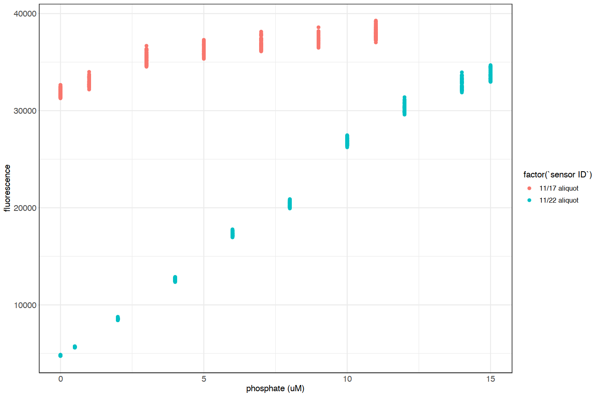
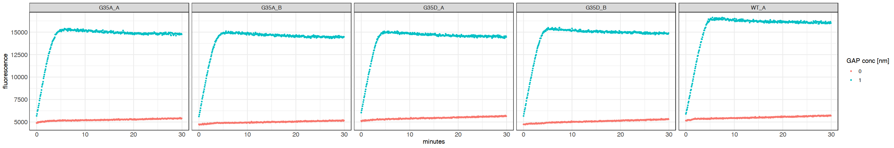
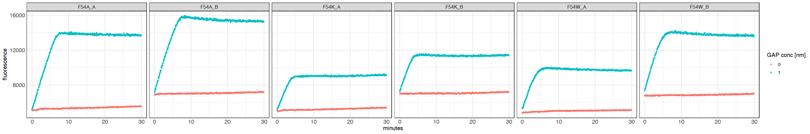
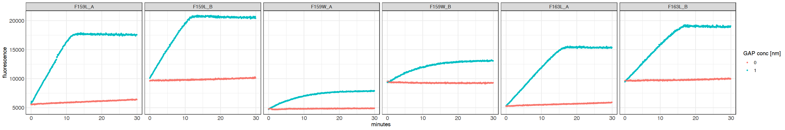
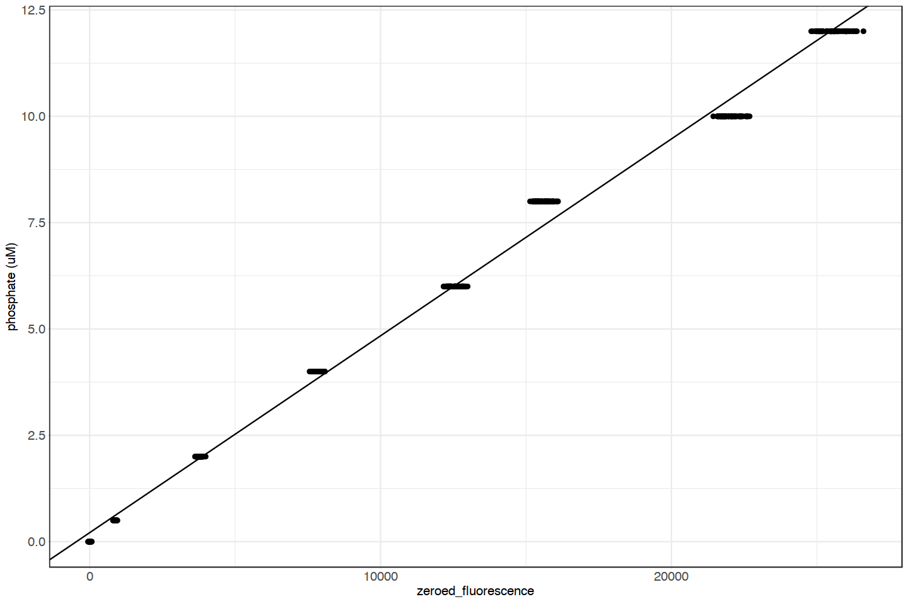

2020-01-22 Phosphate Sensor Calibration¶
library(tidyverse)
library(readxl)
library(lubridate)
# set theme for plotting
# Set font sizes
SMALL_SIZE = 10
MEDIUM_SIZE = 11
BIG_SIZE = 12
# SMALL_SIZE = 6
# MEDIUM_SIZE = 7
# BIG_SIZE = 8
theme_custom <- theme_bw() +
theme(
text = element_text(family = "Helvetica", size = BIG_SIZE),
axis.title = element_text(size = BIG_SIZE),
axis.text = element_text(size = BIG_SIZE),
axis.ticks = element_line(size = 0.05),
axis.ticks.length = unit(0.05, 'cm'),
# legend.position = 'right',
# legend.spacing.y = unit(0.01, 'cm'),
# legend.box = 'horizontal',
# legend.box.just = 'left',
# legend.text = element_text(size = SMALL_SIZE),
# legend.title = element_text(size = SMALL_SIZE),
# legend.margin = margin(t = 0, unit='cm'),
axis.line = element_line(size = 0.1),
strip.text.x = element_text(size = SMALL_SIZE)
)
# options(repr.plot.width=20, repr.plot.height=5)
plate_setup <- read_excel('./20210121_sensor_calib.xlsx')
d_calib <-
read_delim('../../data/GAP_assay/20210121_Phosphate_Calibration.txt',
delim='\t', col_types=cols(), skip=46, n_max = 67,
locale = readr::locale(encoding = "windows-1252")) %>%
mutate(timepoint = row_number()) %>%
pivot_longer(cols = `A1`:`B6`, names_to = 'well', values_to = 'fluorescence') %>%
left_join(plate_setup %>% select(well, `sensor ID`, `final conc P (uM)`), by='well') %>%
select('time' = Time, timepoint, well, fluorescence, `sensor ID`, 'phosphate (uM)' = `final conc P (uM)`) %>%
mutate(`sensor ID` = case_when(`sensor ID` == 1 ~ '11/17 aliquot', `sensor ID` == 2 ~ '11/22 aliquot'))
options(repr.plot.width=12, repr.plot.height=8)
d_calib %>%
# filter(timepoint %in% c(1,67)) %>%
ggplot(aes(x=`phosphate (uM)`, y=fluorescence, color=factor(`sensor ID`))) +
geom_point() +
# facet_grid(cols = vars(timepoint)) +
theme_custom

we need to figure out which one is wrong…
I need to read in the data from the other GAP assays and see what the observed range of values is¶
# 20210117 DATA
# Remove the WT samples in wells C3 and C4 because the rxn vol was incorrect (see notebook entry)
plate_setup <-
read_delim('./20210117/index_table_temp_CORRECTED.txt', delim='\t', col_types=cols()) %>%
mutate(`sensor ID` = c('A','A','A','A','A','A','B','B','B','B','B','B'),
'loading' = c('A','A','B','B','A','A','A','A','B','B','B','B')) %>%
filter(! well %in% c('C3', 'C4')) %>%
select('mutant' = prot, well, `sensor ID`, loading, 'gsp1_conc' = fin.Ran.conc)
d_20210117 <-
read_delim('../../data/GAP_assay/20210117_GAP_assay.txt',
delim='\t', col_types=cols(), skip=46, n_max = 721,
locale = readr::locale(encoding = "windows-1252")) %>%
mutate(timepoint = row_number()) %>%
pivot_longer(cols = `C1`:`C12`, names_to = 'well', values_to = 'fluorescence') %>%
separate('well', c('row', 'col'), sep=1, remove=FALSE, convert=TRUE) %>%
inner_join(plate_setup, by='well') %>%
mutate(`GAP conc [nm]` = factor(ifelse(col %% 2 == 0, 0, 1))) %>%
select('time' = Time, timepoint, mutant, loading, well, row, col, fluorescence, `sensor ID`, gsp1_conc, `GAP conc [nm]`)
options(repr.plot.width=24, repr.plot.height=4)
d_20210117 %>%
mutate('label' = paste(mutant, loading, sep='_')) %>%
mutate(minutes = period_to_seconds(hms(time))/60) %>%
filter(minutes < 30) %>%
ggplot(aes(x=minutes, y=fluorescence, color=`GAP conc [nm]`)) +
geom_point(size=0.5) +
facet_grid(col=vars(label)) +
theme_custom

# 20210118 DATA
plate_setup <-
read_delim('./20210118/index_table_temp.txt', delim='\t', col_types=cols()) %>%
mutate(`sensor ID` = c('A','A','A','A','A','A','B','B','B','B','B','B'),
'loading' = c('A','A','A','A','A','A','B','B','B','B','B','B')) %>%
select('mutant' = prot, well, `sensor ID`, loading, 'gsp1_conc' = fin.Ran.conc)
d_20210118 <-
read_delim('../../data/GAP_assay/20210118_GAP_assay.txt',
delim='\t', col_types=cols(), skip=46, n_max = 721,
locale = readr::locale(encoding = "windows-1252")) %>%
mutate(timepoint = row_number()) %>%
pivot_longer(cols = `E1`:`E12`, names_to = 'well', values_to = 'fluorescence') %>%
separate('well', c('row', 'col'), sep=1, remove=FALSE, convert=TRUE) %>%
inner_join(plate_setup, by='well') %>%
mutate(`GAP conc [nm]` = factor(ifelse(col %% 2 == 0, 0, 1))) %>%
select('time' = Time, timepoint, mutant, loading, well, row, col, fluorescence, `sensor ID`, gsp1_conc, `GAP conc [nm]`)
options(repr.plot.width=24, repr.plot.height=4)
d_20210118 %>%
mutate('label' = paste(mutant, loading, sep='_')) %>%
mutate(minutes = period_to_seconds(hms(time))/60) %>%
filter(minutes < 30) %>%
ggplot(aes(x=minutes, y=fluorescence, color=`GAP conc [nm]`)) +
geom_point(size=0.5) +
facet_grid(col=vars(label)) +
theme_custom

# 20210119 DATA
plate_setup <-
read_delim('./20210119/index_table_temp.txt', delim='\t', col_types=cols()) %>%
mutate(`sensor ID` = c('A','A','A','A','A','A','B','B','B','B','B','B'),
'loading' = c('A','A','A','A','A','A','B','B','B','B','B','B')) %>%
select('mutant' = prot, well, `sensor ID`, loading, 'gsp1_conc' = fin.Ran.conc)
d_20210119 <-
read_delim('../../data/GAP_assay/20210119_GAP_assay.txt',
delim='\t', col_types=cols(), skip=46, n_max = 721,
locale = readr::locale(encoding = "windows-1252")) %>%
mutate(timepoint = row_number()) %>%
pivot_longer(cols = `G1`:`G12`, names_to = 'well', values_to = 'fluorescence') %>%
separate('well', c('row', 'col'), sep=1, remove=FALSE, convert=TRUE) %>%
inner_join(plate_setup, by='well') %>%
mutate(`GAP conc [nm]` = factor(ifelse(col %% 2 == 0, 0, 1))) %>%
select('time' = Time, timepoint, mutant, loading, well, row, col, fluorescence, `sensor ID`, gsp1_conc, `GAP conc [nm]`)
options(repr.plot.width=24, repr.plot.height=4)
d_20210119 %>%
mutate('label' = paste(mutant, loading, sep='_')) %>%
mutate(minutes = period_to_seconds(hms(time))/60) %>%
filter(minutes < 30) %>%
ggplot(aes(x=minutes, y=fluorescence, color=`GAP conc [nm]`)) +
geom_point(size=0.5) +
facet_grid(col=vars(label)) +
theme_custom

After discussing with Tina, it looks like I messed up something with the 11/17 sensor, but the 11/22 sensor looks good, so we will fit a curve to that
Tina’s method from the paper was:
ignore phoshpate concentrations above 60% of the sensor (so up to 12 uM phopshate for 20 uM sensor)
compute the mean value of all timepoints of the 0 phosphate well (call this the blank)
subtract the blank value from all other measurements, effectively zeroing the minimum
fit a line through all of the points
d_calib2 <-
d_calib %>%
filter(`sensor ID` == '11/22 aliquot', `phosphate (uM)` < 13) %>%
select(well, `phosphate (uM)`, fluorescence) %>%
group_by(well) %>%
mutate('mean_fluorescence' = mean(fluorescence)) %>%
ungroup() %>%
mutate('blank_mean_fluorescence' = min(mean_fluorescence),
'zeroed_fluorescence' = fluorescence-blank_mean_fluorescence)
library(broom)
calibration <- tidy(lm(`phosphate (uM)` ~ zeroed_fluorescence, d_calib2))
calibration
intercept <- calibration$estimate[1]
slope <- calibration$estimate[2]
| term | estimate | std.error | statistic | p.value |
|---|---|---|---|---|
| <chr> | <dbl> | <dbl> | <dbl> | <dbl> |
| (Intercept) | 0.2113335605 | 1.978683e-02 | 10.68052 | 2.892773e-24 |
| zeroed_fluorescence | 0.0004629023 | 1.392792e-06 | 332.35557 | 0.000000e+00 |
options(repr.plot.width=12, repr.plot.height=8)
ggplot(d_calib2, aes(x=zeroed_fluorescence, y=`phosphate (uM)`)) +
geom_point() +
geom_abline(aes(slope=slope,intercept=intercept)) +
theme_custom
